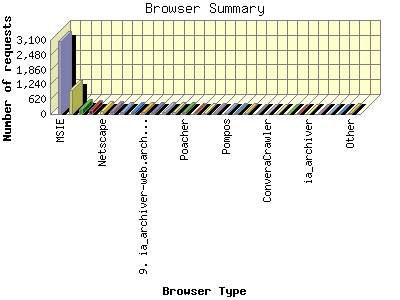
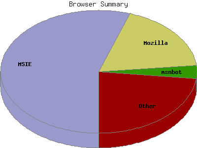

Report generated by Analog 5.91beta1 and Report Magic 2.21
|
Web Server Statistics for "Harish Narayanan (hnarayan) - October 2004" Report generated by Analog 5.91beta1 and Report Magic 2.21 |
The Browser Summary identifies the most popular web browsers used to visit
this site.
Browsers are broken down by recognized categories such as
Netscape Navigator/Communicator, Microsoft Internet Explorer, WebTV, Opera
and the like. Within each category is also a subgroup by version number
such as 'MSIE 5.0' or 'Netscape 4.5'.
This report shows all results. This report is sorted by number of requests.


| Browser Type | Number of requests | Number of bytes transferred | Percentage of the bytes | Percentage of the requests | |
|---|---|---|---|---|---|
| 1. | MSIE | 3,071 | 83.369 MB | 54.71% | 55.19% |
| MSIE/6 | 2,755 | 72.509 MB | 47.58% | 49.52% | |
| MSIE/5 | 315 | 10.854 MB | 7.12% | 5.66% | |
| MSIE/4 | 1 | 6.966 KB | 0.00% | 0.02% | |
| 2. | Mozilla | 1,014 | 19.475 MB | 12.78% | 18.22% |
| Mozilla/1 | 1,014 | 19.475 MB | 12.78% | 18.22% | |
| 3. | msnbot | 192 | 7.571 MB | 4.97% | 3.45% |
| msnbot/0 | 192 | 7.571 MB | 4.97% | 3.45% | |
| 4. | Netscape (compatible) | 163 | 2.711 MB | 1.78% | 2.93% |
| 5. | Netscape | 141 | 2.896 MB | 1.90% | 2.53% |
| Netscape/7 | 124 | 2.793 MB | 1.83% | 2.23% | |
| Netscape/4 | 9 | 62.799 KB | 0.04% | 0.16% | |
| Netscape/6 | 8 | 42.462 KB | 0.03% | 0.14% | |
| 6. | Yahoo-MMCrawler | 107 | 4.362 MB | 2.86% | 1.92% |
| 7. | Safari | 93 | 2.182 MB | 1.43% | 1.67% |
| Safari/125 | 72 | 2.064 MB | 1.35% | 1.29% | |
| Safari/85 | 12 | 73.433 KB | 0.05% | 0.22% | |
| Safari/100 | 9 | 47.875 KB | 0.03% | 0.16% | |
| 8. | Googlebot | 89 | 7.291 MB | 4.78% | 1.60% |
| Googlebot/2 | 89 | 7.291 MB | 4.78% | 1.60% | |
| 9. | ia_archiver-web.archive.org | 86 | 57.602 KB | 0.04% | 1.55% |
| 10. | Googlebot-Image | 82 | 6.619 MB | 4.34% | 1.47% |
| 11. | FAST-WebCrawler | 77 | 3.637 MB | 2.39% | 1.38% |
| FAST-WebCrawler/3 | 77 | 3.637 MB | 2.39% | 1.38% | |
| 12. | psbot | 67 | 2.215 MB | 1.45% | 1.20% |
| psbot/0 | 67 | 2.215 MB | 1.45% | 1.20% | |
| 13. | Poacher | 66 | 3.473 MB | 2.28% | 1.19% |
| Poacher/0 | 66 | 3.473 MB | 2.28% | 1.19% | |
| 14. | Opera | 42 | 417.681 KB | 0.27% | 0.76% |
| Opera/7 | 41 | 415.146 KB | 0.27% | 0.74% | |
| Opera/6 | 1 | 2.534 KB | 0.00% | 0.02% | |
| 15. | Wget | 38 | 352.355 KB | 0.23% | 0.68% |
| Wget/1 | 38 | 352.355 KB | 0.23% | 0.68% | |
| 16. | mozilla | 30 | 3.730 MB | 2.45% | 0.54% |
| mozilla/5 | 30 | 3.730 MB | 2.45% | 0.54% | |
| 17. | Pompos | 23 | 51.133 KB | 0.03% | 0.41% |
| Pompos/1 | 23 | 51.133 KB | 0.03% | 0.41% | |
| 18. | Iltrovatore-Setaccio | 22 | 55.494 KB | 0.04% | 0.40% |
| Iltrovatore-Setaccio/1 | 22 | 55.494 KB | 0.04% | 0.40% | |
| 19. | NaverBot-1.0 (NHN Corp. | 21 | 187.829 KB | 0.12% | 0.38% |
| NaverBot-1.0 (NHN Corp. / | 21 | 187.829 KB | 0.12% | 0.38% | |
| 20. | Galeon | 18 | 95.908 KB | 0.06% | 0.32% |
| Galeon/1 | 18 | 95.908 KB | 0.06% | 0.32% | |
| 21. | ConveraCrawler | 17 | 103.480 KB | 0.07% | 0.31% |
| ConveraCrawler/0 | 17 | 103.480 KB | 0.07% | 0.31% | |
| 22. | Konqueror | 15 | 91.989 KB | 0.06% | 0.27% |
| Konqueror/3 | 15 | 91.989 KB | 0.06% | 0.27% | |
| 23. | Fast Crawler v X | 12 | 102.626 KB | 0.07% | 0.22% |
| 24. | Program Shareware 1.0.0 | 11 | 76.839 KB | 0.05% | 0.20% |
| 25. | ia_archiver | 11 | 140.168 KB | 0.09% | 0.20% |
| 26. | webcollage | 6 | 537.937 KB | 0.34% | 0.11% |
| webcollage/1 | 6 | 537.937 KB | 0.34% | 0.11% | |
| 27. | http: | 6 | 12.624 KB | 0.01% | 0.11% |
| http://www | 6 | 12.624 KB | 0.01% | 0.11% | |
| 28. | DoCoMo | 5 | 194.264 KB | 0.12% | 0.09% |
| DoCoMo/2 | 5 | 194.264 KB | 0.12% | 0.09% | |
| 29. | Java | 3 | 7.603 KB | 0.01% | 0.05% |
| Java/1 | 3 | 7.603 KB | 0.01% | 0.05% | |
| 30. | W3C_Validator | 3 | 27.370 KB | 0.02% | 0.05% |
| W3C_Validator/1 | 3 | 27.370 KB | 0.02% | 0.05% | |
| 31. | Jigsaw | 3 | 16.122 KB | 0.01% | 0.05% |
| Jigsaw/2 | 3 | 16.122 KB | 0.01% | 0.05% | |
| 32. | W3C-WebCon | 3 | 12.568 KB | 0.01% | 0.05% |
| W3C-WebCon/5 | 3 | 12.568 KB | 0.01% | 0.05% | |
| 33. | DiamondBot | 2 | 5.068 KB | 0.00% | 0.04% |
| 34. | IUPUI Research Bot v 1.9a | 2 | 13.971 KB | 0.01% | 0.04% |
| 35. | Dillo | 2 | 20.920 KB | 0.01% | 0.04% |
| Dillo/0 | 2 | 20.920 KB | 0.01% | 0.04% | |
| 36. | libwww-perl | 2 | 97.632 KB | 0.06% | 0.04% |
| libwww-perl/5 | 2 | 97.632 KB | 0.06% | 0.04% | |
| 37. | stat statcrawler@gmail.com | 2 | 7.118 KB | 0.01% | 0.04% |
| 38. | contype | 2 | 25.219 KB | 0.02% | 0.04% |
| 39. | WEP Search 00 | 2 | 13.971 KB | 0.01% | 0.04% |
| 40. | IE | 2 | 5.057 KB | 0.00% | 0.04% |
| IE/5 | 2 | 5.057 KB | 0.00% | 0.04% | |
| 41. | WDG_Validator | 1 | 4.621 KB | 0.00% | 0.02% |
| WDG_Validator/1 | 1 | 4.621 KB | 0.00% | 0.02% | |
| 42. | GoForIt.com | 1 | 2.522 KB | 0.00% | 0.02% |
| 43. | Missigua Locator 1.9 | 1 | 6.985 KB | 0.00% | 0.02% |
| 44. | Lincoln State Web Browser | 1 | 6.985 KB | 0.00% | 0.02% |
| 45. | Crawlzilla-web-bot | 1 | 2.522 KB | 0.00% | 0.02% |
| Crawlzilla-web-bot/1 | 1 | 2.522 KB | 0.00% | 0.02% | |
| 46. | Openfind data gatherer, Openbot | 1 | 148.006 KB | 0.10% | 0.02% |
| 47. | Baiduspider+(+http: | 1 | 2.534 KB | 0.00% | 0.02% |
| Baiduspider+(+http://www | 1 | 2.534 KB | 0.00% | 0.02% | |
| 48. | WWW-Mechanize | 1 | 13.291 KB | 0.01% | 0.02% |
| 49. | Gaisbot | 1 | 2.522 KB | 0.00% | 0.02% |
| Gaisbot/3 | 1 | 2.522 KB | 0.00% | 0.02% | |
| 50. | Szukacz | 1 | 2.534 KB | 0.00% | 0.02% |
| Szukacz/1 | 1 | 2.534 KB | 0.00% | 0.02% | |
| 51. | NutchCVS | 1 | 2.522 KB | 0.00% | 0.02% |
| NutchCVS/0 | 1 | 2.522 KB | 0.00% | 0.02% | |
This report was generated on November 16, 2004 14:01.
Report time frame October 1, 2004 00:09 to October 31, 2004 22:18.
| Web statistics report produced by: | |
 Analog 5.91beta1 Analog 5.91beta1 |  Report Magic 2.21 Report Magic 2.21 |